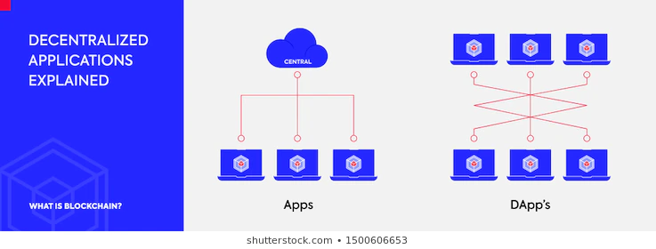

J'ai découvert ce sujet l'année dernière, grâce à ma frustration de l'incompréhension du Bitcoin. Grâce aux longs visionnages de vidéos explicatives et des lectures de nombreux articles, si je n'ai pu saisir le fonctionnement technique exact d'Ethereum, je crois au moins en avoir saisi l'intérêt et l'utilité.
Inventée par Vitalik Butrein, Ethereum est considérée comme la blockchain la plus prometteuse en dehors du Bitcoin. Il faut savoir qu'Ethereum n'a pas été conçu pour concurencer le Bitcoin, puisque contrairement au Bitcoin, Ethereum n'a pas un but seulement monétaire. Ethereum a pour but principal la création d'un web décentralisé.
Pour comprendre la blockchain, une petite vidéo explicative:
Les participants du réseau Ethereum exécutent du code provenant d'applications décentralisées, les DApps. Ce code permet la mise en place de smart contracts, qui constituent le principal intérêt d'Ethereum.
Les smart contracts sont des programmes autonomes qui exécutent automatiquement des conditions définies au préalable. Ces programmes ont de nombreux avantages comme une vitesse accrue ou une plus grande efficacité. De plus, intégrés dans la blockchain, il est garantit que les termes du smart contract ne pourront pas être modifiés, renforçant ainsi leur intégrité.
Grâce au code source d'Ethereum, des applications décentralisées dites les DApps peuvent être développées. La principale utilité d'une DApp est de rendre un service à ses utilisateurs sans jamais devoir passer par un tiers de confiance. Les DApps sont donc plus justes, mais aussi beaucoup plus transparentes.


2597: le nombre d'applications décentralisées dénombrées sur le réseau Ethereum en avril 2019, soit 1335 de plus que l’année précédente traduisant une hausse de 105 % en 12 mois.
17 000: le nombre d'utilisateurs journaliers de DApps.
1,5 millions: c'est le nombre d'ethers qui ont été verrouillés dans le smart contract de MakerDAO, permettant aux utilisateurs d'emprunter des ETH (token d'Ethereum) et des DAI (token de MakerDAO).
1200: c'est le nombre de programmeurs ayant travaillé sur le projet Ethereum en juin 2019.
Token: un actif digital qui représente une certaine valeur, pouvoir ou droit dans un réseau. Les jetons peuvent être transférables, échangeables d'un individu à un autre sans passer par un intermédiaire, et en temps réel. Il n'est pas possible de les dupliquer.
Pour en savoir plus, l'article sur les token de Cryptoast.
MakerDAO: plateforme autonome gerée sur Ethereum et qui a pour vocation d'être décentralisée. Cette plateforme a mis en place deux token, dont le Dai.
Un stablecoin: en français "monnaie stable", puisque, comme l'indique son nom, a pour particularité d'avoir une valeur stable. Dai, citée au dessus, est une stablecoin.
Encore une fois, les articles de cryptoast à la rescousse ! Je vous mets en lien l'article sur MakerDAO.
Pour en apprendre plus sur le sujet, je conseille la chaîne Youtube entière de...Cryptoast. Oui, encore. Plus sérieusement je me suis beaucoup amusée à regarder ses vidéos très intéressantes et abordables même pour des cerveaux peu habitués à la technologie en général... et même à 1h du matin (surtout à 1h du matin).